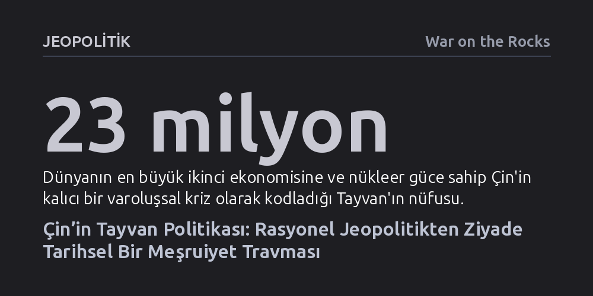

JEOPOLITIK · War on the Rocks · 2026-10-14
Çin’in Tayvan tutumu rasyonel jeopolitik hesaplardan ziyade, rejimin meşruiyetini bağladığı bin yıllık parçalanma travmasından besleniyor. Dolayısıyla ABD’nin sembolik çıkışları Pekin’i caydırmak yerine kışkırtırken, etkili strateji retorikten uzak durup sessiz askeri caydırıcılığı güçlendirmeyi gerektiriyor.
Tayvan krizini salt çip üretimi ve ada zinciri gibi rasyonel stratejik hesaplarla açıklayan yaygın bakışı yıkarak, Pekin için meselenin rejimin tarihsel varoluş sınavı olduğunu gösteriyor.

Tayvan Boğazı’ndaki gerilimi değerlendiren analizlerin neredeyse tamamı bilindik jeopolitik gerekçelere dayanır: adanın birinci ada zincirindeki kritik konumu, küresel çip üretiminin merkezi olan TSMC tesisleri ve ABD ile Çin arasındaki küresel güç rekabeti. Ne var ki dünyanın en büyük ikinci ekonomisine ve caydırıcı bir nükleer cephaneliğe sahip bir gücün, yanı başındaki 23 milyonluk demokratik bir adayı tavizsiz ve sürekli bir varoluş krizine dönüştürmesini yalnızca rasyonel maliyet-fayda hesaplarıyla açıklamak imkânsızdır.
Dışarıdan bakıldığında stratejik bir hesap gibi duran bu tutumun altında, Çin Komünist Partisi’nin (ÇKP) üç bin yıllık hanedan tarihinden devşirdiği ve bilinçli olarak benimsediği "parçalanma şablonu" yatar. Bu şablona göre, merkezden kopan veya yenilgiye uğrayan bir rejim yakındaki bir sığınağa çekilip tüm ülke üzerindeki egemenlik iddiasını sürdürüyorsa, bu durum merkezdeki iktidarın meşruiyetine ölümcül bir meydan okuma oluşturur. Bu tarihsel ikilem nesnel bir zorunluluk olmasa bile, Pekin yönetimi tarafından bizzat benimsenmiş ve rejimin hayatta kalma şartı olarak kurgulanmıştır.
Çin siyasi düşüncesinde hükümdarın iktidarını meşrulaştıran "Göğün Yetkesi" (Tianming), Avrupa’daki ilahi krallık anlayışından farklı olarak bir performans ve liyakat standardıdır. Antik Zhou döneminden bu yana hükümdarın bu yetkeyi koruyabilmesi; kamu düzenini sağlamasına, felaketleri yönetmesine ve hepsinden önemlisi ülkenin siyasi birliğini muhafaza etmesine bağlıdır. Tarihte Jin veya Ming hanedanlarının düşüşünden sonra güneyde kurulan rakip sarayların varlığı, merkezdeki gücün yetkeyi yitirdiğinin ve ahlaki meşruiyetini kaybettiğinin en açık kanıtı sayılmıştır.
1949’da Çan Kay-şek liderliğindeki Milliyetçilerin iç savaşı kaybederek Tayvan’a çekilmesi ve onlarca yıl boyunca tüm Çin’in meşru hükümeti olduklarını iddia etmeleri, Pekin’in zihnindeki bu tarihsel şablonu canlandırdı. ÇKP yönetimi, özellikle 1989 Tiananmen olaylarının ardından başlattığı vatansever eğitim hamlesiyle "Yüzyıllık Aşağılanma" dönemini kolektif hafızanın merkezine yerleştirdi. Psikiyatride "seçilmiş travma" olarak adlandırılan bu kurgu, ulusal birliği doğrudan rejim bekasıyla eşitledi. Şi Cinping’in "ulusal şahlanış" hedefiyle birlikte Tayvan’ın ayrılığı, her hanedanın ölçüldüğü nihai medeniyet sınavının henüz tamamlanmadığının kanıtı haline getirildi.
Washington’ın Tayvan krizine yönelik caydırıcılık stratejileri ve düşünce kuruluşlarınca (özellikle CSIS) yürütülen savaş oyunları, büyük ölçüde klasik rasyonel aktör modeline dayanmaktadır. Bu simülasyonlar, askeri sevkiyat ve mühimmat verilerini hassas biçimde hesaplasa da karşı tarafın tehdit algısını eksik modellemektedir. Thomas Schelling geleneğindeki caydırıcılık mantığı, askeri müdahalenin maliyetini statükonun maliyetinden daha yükseğe çıkararak Pekin’in geri adım atacağını varsayar.
Oysa ÇKP için Tayvan konusunda eylemsizliğin bedeli doğrudan "rejim ölümü" olarak kodlandığında, standart maliyet-fayda denklemi çöker. Pekin yönetimi, dışarıdan bakan analistlerin "akıl dışı" veya "katlanılamaz" gördüğü ağır ekonomik ve askeri bedelleri, meşruiyetini korumak adına göze alabilir. Dahası, ABD’nin Tayvan’ı demokrasi ile otokrasi arasındaki mücadelenin simgesi olarak sunması veya üst düzey heyetlerle kamusal şovlar yapması caydırıcılık sağlamaz; aksine Çin’in zihnindeki "yabancı güçlerin Çin’i bölme girişimi" şablonunu tetikler. 2022’deki Nancy Pelosi ziyareti bunun en somut örneğidir; ziyaret, Pekin’e Tayvan Boğazı’ndaki orta çizgiyi fiilen silme ve baskıyı kalıcılaştırma bahanesi sunmuştur.
Pekin yönetimi benimsediği bu travmatik şablonu yasalara ve eğitim müfredatına kazıyarak aslında kendi manevra alanını daraltmış, adeta kendi eline retorik kelepçeler takmıştır. Halkına sürekli birleşmenin vazgeçilmezliğini anlatan ÇKP için açık bir geri adım atmak, rejimin meşruiyetine ağır bir darbe anlamına gelmektedir. Buna karşılık kamuoyu araştırmaları, Çin halkının boş tehditler yerine gelecekteki başarı için sabır gösterilmesini onayladığını ortaya koymaktadır. Bu durum, doğru yönetildiği takdirde zamanın ABD ve Tayvan lehine işleyebileceğini gösterir.
ABD için akılcı strateji, Pekin’e kamuoyu önünde meşruiyet gösterisi yapma fırsatı veren sembolik adımlardan kaçınmaktır. Washington, Tayvan’ın statüsüne ya da kimliğine dair ideolojik beyanları en aza indirmeli, adayı büyük güçler mücadelesinin bir piyonu gibi göstermekten vazgeçmelidir. Bunun yerine, kamuoyuna açık şovlara girişmeksizin Tayvan’ın savunma kapasitesini güçlendiren sessiz, kararlı ve etkili askeri tahkimata odaklanılmalıdır. Askeri dengeyi sahada değiştiren ancak Pekin’in tarihsel meşruiyet korkusunu tetiklemeyen bir sessiz güç inşası, krizin gerçek ve sürdürülebilir tek caydırıcılık anahtarıdır.